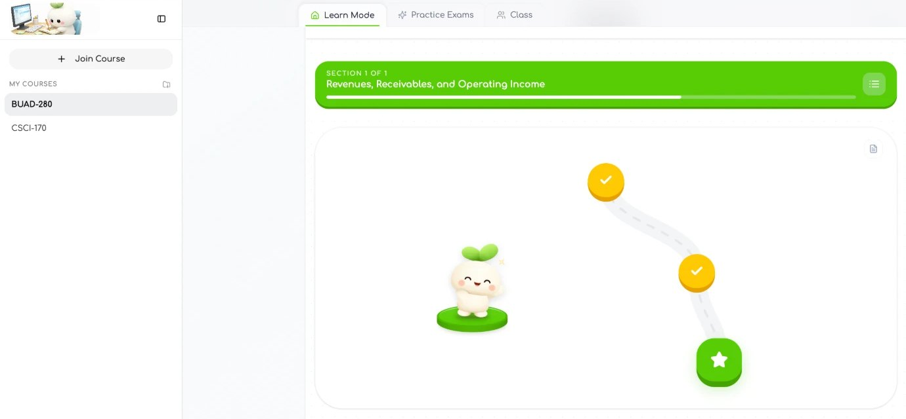
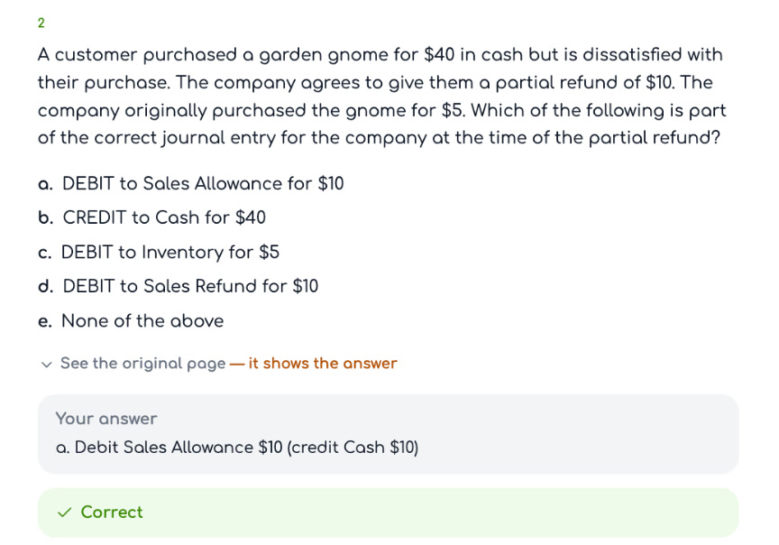

Sep 2026 – Present · Internship · FastAPI · Next.js · pytest · LLM evaluation
Knovus.ai: Making Practice Questions Answerable
Knovus is an AI study platform that turns a student’s course files into lessons and practice questions. My part is the practice questions: figure out if students can actually answer them, fix what’s broken, and prove the fix works.
- I sampled 90 stored questions across 16 courses and had each one judged by three independent reviews: 53% couldn’t be fully attempted. It wasn’t the AI model’s fault, the format the questions got saved in just had no place for the full question text.
- I wrote my manager a proposal with two options, and he forwarded it to the founder and the rest of the team. He picked grading each question against its original page in the course file, which I built, so about 2,400 existing questions kept working without being reprocessed. It got merged into the production code on Sep 28, and he later built on it with PowerPoint and Word previews.
- A page often has several questions on it, so in round two I turned each one into its own card, copied word for word and checked by 9 rules plus a model. On 60 random production questions I got 37 clean cards and 0 serious errors, it caught all 54 mistakes I planted, and it cost about $0.37 in model calls. (It also wrongly rejected 1 of 8 cards that were already fine.) It was merged and turned on by default Oct 22, and the team has reworked it since.
- My first grader test scored 100% across 120 gradings, which honestly was suspicious, so I reported it as a failed test and made the cases harder. That caught the cheaper grader marking 1 of 20 wrong answers as right, so the one that shipped is the slower grader that solves the problem first: 0 of 20.
- 18 of my commits are merged into the production branch, across the FastAPI backend and the Next.js frontend, including about 250 tests.